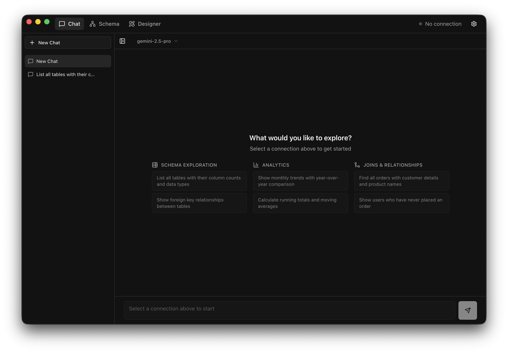

Connect to your database. Ask questions in plain English or describe the schema you need. Get working queries and visual ERDs — powered by the AI model of your choice.

A complete SQL workspace powered by AI — no context-switching required.
Describe your database in plain English. AI proposes tables, relationships, and constraints. Visual ERD canvas, DDL generation, and optional execution against a live database.
Connect to PostgreSQL, MySQL, SQLite, and SQL Server from a single app.
OpenAI, Anthropic, Google, OpenRouter, or local Ollama — you choose what runs your queries.
AI receives your full schema for context — tables, columns, relationships — producing accurate results every time.
Run EXPLAIN on any query and view the execution plan rendered as an interactive Mermaid diagram.
Turn any result set into bar, line, pie, scatter, or area charts. Export to Excel, CSV, or branded PDF reports.
Get AI-powered index recommendations and query rewrites to speed up slow queries.
Natural language in, precise SQL out — query, design schemas, visualize results, and export in one place.
Add your connection string for any supported database. Your credentials never leave your machine.
Type what you want to know or describe the schema you need. SQL Assist generates queries and designs schemas from your words.
Inspect the generated SQL, run it, chart the results, and export — all without leaving the app.
Free, open source, and runs entirely on your machine.
⬇ Download for macOS — Free & Open Source